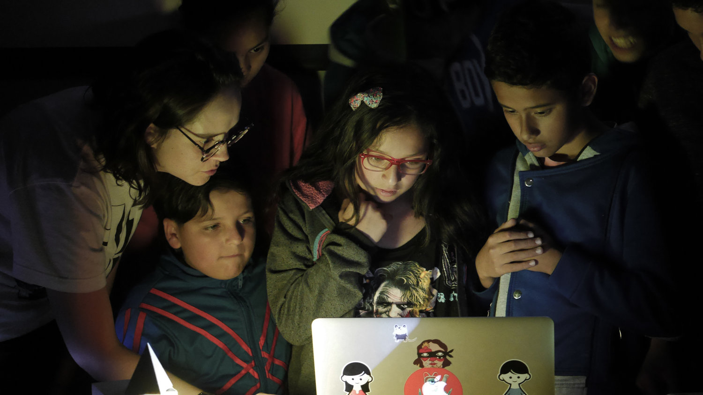
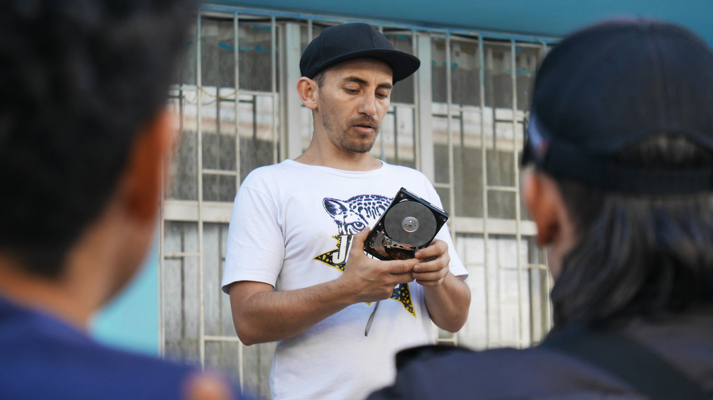

Música electrónica en Ciudad Bolívar.
A principios de 2019 comencé a trabajar con Julio Victoria, uno de los grandes exponentes de la música electrónica en el país, en un proyecto para llevar talleres de este tipo de música a Ciudad Bolívar, una de las zonas más desfavorecidas de Bogotá. Con el apoyo del Goethe Institut desarrollamos seis talleres teórico-prácticos entre mayo y septiembre de 2019. Cada uno contó con la participación de artistas expertos en sus disciplinas junto a un grupo de treinta niños.
Participé en la fundación de este colectivo y apoyé todo lo relacionado con el área audiovisual. También rediseñé la página web de Julio Vitoria y he estado trabajando con él en otros proyectos paralelos.

